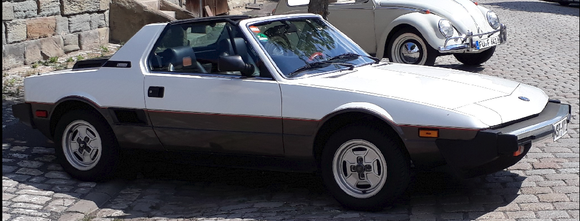

X1/9e - Technische Dokumentation¶
BERTONE X1/9e
Umrüstung eines BERTONE X1/9 auf Elektro-Antrieb

Fahrzeug-Eckdaten:
- Umbau, Tag der Erstzulassung: 1983
- Batterie-Elektrofahrzeug
- Umrüstung durch Privatperson
- Kraftübertragung durch konventionelles Getriebe
- Fahrzeugklasse: M1
- Betriebsspannung HV-Batterie: 114 V DC
Projektdokumentation und Umrüstung:
Frank Hielscher
Dipl.-Wirtschaftsingenieur (FH)
Staatlich geprüfter Techniker, Fachrichtung Elektrotechnik
Kontakt:
Frank Hielscher
Zum Muschbach 17
97816 Lohr
Tel. 0172 6811397
E-Mail FHielscher@web.de
Ausgabe 2026-05-31
Technische Kurzbeschreibung¶
Allgemeines¶
Angaben zum Fahrzeug¶
| Fahrzeugparameter | Spezifikation / Wert |
|---|---|
| Marke | BERTONE (I) |
| Typ | 128AS1 |
| Tag der Erstzulassung | 1983 |
| Fahrzeugklasse | M1 |
| Bezeichnung | Bertone X1/9e umgerüstet auf batterieelektrischen Antrieb (BEV) durch Privatperson |
| Kraftübertragung | Durch konventionelles Getriebe |
| Betriebsspannung HV-Batterie | 114 V DC |
Zusätzliche Informationen zur Fahrzeugtechnik: Die Bremsanlage (ohne Unterdruckkraftverstärker) und Lenkung (ohne Servo) des Basisfahrzeugs bleiben mechanisch und hydraulisch unangetastet. Die Beheizung der Frontscheibe wurde durch ein elektrisches System ersetzt.
Name und Anschrift des Umrüsters¶
Frank Hielscher, 97816 Lohr a. Main
Antriebssystem (Powertrain)¶
Systembezeichnung: NetGain HyPer 9 IS™ (Integrated System)
Elektromotor (Antriebsmotor)¶
| Parameter | Spezifikation |
|---|---|
| Hersteller | NetGain Motors, Inc. (Gefertigt durch: SME S.p.A., Italien) |
| Modell / Typ | HyPer 9™ (SRIPM - Synchronous Reluctance Internal Permanent Magnet) |
| Nennspannung | 100 V |
| Nennstrom | 350 A |
| Nenndrehzahl | 3.200 U/min (S1-Dauerbetrieb) |
| Maximaldrehzahl | 8.000 U/min |
Inverter / Motor Controller¶
| Parameter | Spezifikation |
|---|---|
| Hersteller | SME S.p.A., Italien |
| Modell | AC-X1 80/100V 750A SWS |
| Type Code | ACX1S75000000 |
| Rating Data | 80/100V, 750 A (Maximalstrom) |
Zusammenfassende Leistungsdaten des Gesamtsystems (Eintragungswerte)¶
| Leistungsdaten | Wert / Zustand |
|---|---|
| Maximale 30-Minuten-Leistung | 38 kW (Dauerleistung gemäß Herstellerangabe Systemintegrator NetGain; abgeleitet aus S1-Betrieb) |
| Maximale Nutzleistung | 95 kW (Spitzenleistung) |
| Maximales Drehmoment | 234 Nm (Hinweis: Begrenzung via Controller-Mapping auf 154 Nm zum Schutz des Original-Getriebes parametriert) |
Energiespeichersystem REESS¶
Technische Daten¶
| Parameter | Spezifikation / Angabe |
|---|---|
| Hersteller (Zellen) | Panasonic |
| Hersteller (Module) | TESLA (gebrauchte Module aus TESLA Model S mit je 5,3 kWh) |
| Typ (Zellen) | NCR18650B, NCA (Nickel-Cobalt-Aluminium) |
| Anzahl und Anordnung der Module | 5 Module, aufgeteilt in einen 2er-Pack und einen 3er-Pack (jeweils in separatem Gehäuse) |
| Zellkonfiguration pro Modul | 6S74P |
| Zellkonfiguration Gesamt | 30S74P |
| Zellenanzahl | 2220 |
| Nennspannung | 114 V DC (3,8 V/Zelle x 30 Zellen in Serie) |
| Ladeschlussspannung | 126 V DC (4,2 V/Zelle x 30 Zellen in Serie) |
| Abschaltspannung | 90 V DC (3,0 V/Zelle x 30 Zellen in Serie) |
| Kapazität | 232 Ah (26,5 kWh) |
| Höchststrom | 870 A (10 Sek.) |
| Batteriemanagementsystem (BMS) | SimpBMS (Master-Slave-System mit TESLA Slave Boards) |
| Überladeschutz | Integriert im BMS (automatische Abschaltung) |
| Überhitzungsschutz | 2 Temperatursensoren pro Modul und Notabschaltung durch BMS |
| Thermomanagement | Typ: Aktive Flüssigkeitskühlung Konstruktion: Die Kühlung erfolgt über Kühlschleifen, die direkt entlang der Zellen innerhalb jedes Moduls geführt sind. Verschaltung: Alle Kühlkreisläufe der einzelnen Module sind parallel geschaltet. Medium: G48 (Glysantin) korrosionsgeschützt und frostsicher |
| Gehäusematerial | Aluminium |
| Gewicht (gesamt) | 185 kg |
| Maintenance Service Disconnect (MSD) | Typ: NISTAR NI4-1-S630-2NYA (je Batteriepack). Funktion: Trennt bei Entfernung die interne Serienschaltung der Module und senkt die Spannung auf Kleinspannungsniveau (< 60V DC). |
| Sicherung | EATON BUSSMANN EBSD-630A (je Batteriepack) |
Schematische Darstellung des Funktionsbereiches¶

Beschreibung und Gehäuseaufbau des REESS¶
- Aufbau Tesla 5,3 kWh Modul (5 x vorhanden):

- Module im Battery Pack eingebaut (2 x vorhanden):

Battery Pack rear (Aufbau, Werkstoffe und physische Abmessungen)¶
Eigenbau, basierend auf zwei gebrauchten TESLA Model S 5,3 kWh Modulen inkl. HV-Buchse mit HVIL Kontakten, MSD und HV-Relais, integrierter Kühlkreislauf, Notentlüftungs- & Druckausgleichselement.
| Parameter | Spezifikation / Angabe |
|---|---|
| Konstruktion: | Seitenwände aus 28 mm x 240 mm Aluminium-Systemprofil verschraubt mit Front- und Rückseite aus 6 mm Aluminiumplatten. Deckel- und Boden aus 5 mm Aluminiumplatten. |
| Abdichtung: | Neopren Zellkautschuk CR-150 |
| Abmessung: | 340 mm x 240 mm x 788 mm |
| Gewicht: | 80 kg |
| Kapazität: | 10,6 kWh |
| Nennspannung: | 45,6 V |
Battery Pack front (Aufbau, Werkstoffe und physische Abmessungen)¶
Eigenbau, basierend auf drei gebrauchten TESLA Model S 5,3 kWh Modulen inkl. HV-Buchse mit HVIL Kontakten, MSD und HV-Relais, integrierter Kühlkreislauf, Notentlüftungs- & Druckausgleichselement.
| Parameter | Spezifikation / Angabe |
|---|---|
| Konstruktion: | Seitenwände aus 28 mm Aluminium-Systemprofil verschraubt mit Front- und Rückseite aus 6 mm Aluminiumplatten. Deckel- und Boden aus 5 mm Aluminiumplatten. |
| Abdichtung: | Neopren Zellkautschuk CR-150 |
| Abmessung: | 340 mm x 320 mm x 788 mm |
| Gewicht: | 105 kg |
| Kapazität: | 15,9 kWh |
| Nennspannung: | 68,4 V |
Geometrische Integration des REESS im Fahrzeug¶


Mechanische Integration und Crashsicherheit (REESS-Befestigung)¶
Die physische Integration der Batteriegehäuse im Fahrzeug wurde unter Berücksichtigung der statischen und dynamischen Lastanforderungen konstruiert:
- Vorderer Batterie-Pack (3er-Modulblock): Die Platzierung erfolgt im vorderen Kofferraum. Die mechanische Verbindung mit der Karosserie wird über vier hochfeste Stahlwinkel realisiert. Diese sind mit jeweils zwei M8-Schrauben am Pack-Gehäuse sowie mit 7/16" UNF-Schrauben am Fahrzeug-Zwischenboden und der Spritzwand verschraubt. Zur flächigen Lasteinleitung in das Karosserieblech kommen großflächige, FIA-konforme Gurt-Verstärkungsplatten aus Stahl auf den Außenseiten zum Einsatz.
- Hinterer Batterie-Pack (2er-Modulblock): Die Montage erfolgt im Motorraum oberhalb des Getriebes (Position des ehemaligen Zylinderkopfs/Einspritzanlage). Zur Befestigung werden die fahrzeugseitigen Original-Aufnahmepunkte der oberen Werks-Motoraufhängung genutzt.
Thermomanagement und elektronische Steuerung¶
| Systemkomponente | Technische Ausführung / Spezifikation |
|---|---|
| Typ der Wärmeregelung | Geschlossener Flüssigkeitskreislauf bestehend aus: • Wärmetauscher: THERMOTEC D7W073TT • Umwälzpumpe: Original Tesla Wasserpumpe • Ausgleichsbehälter und EPDM-Kühlschläuche (8 x 3,5 mm) • Kühlmedium: G48 (frost- und korrosionsgeschützt) |
| Elektronische Steuerung (BMS) | SimpBMS (Master-Slave-System) Kommunikation und Überwachung erfolgt über die originalen Tesla Slave-Boards direkt auf den Modulen. |
| Überladeschutz | Integriert (Hardware & Software): Automatische Trennung der HV-Schütze bei Erreichen der parametrierten Zell-Ladeschlussspannung durch das SimpBMS. |
| Überhitzungsschutz | Redundante Temperaturüberwachung: Kontinuierliche Erfassung über zwei Sensoren pro Modul. Bei Überschreitung der Grenztemperatur erfolgt eine automatische Notabschaltung des Gesamtsystems. |
Ladesystem¶
| Parameter | Spezifikation / Angabe |
|---|---|
| Ladeanschluss | Typ 2 („Mennekes“) nach IEC 62196 |
| Ladebetriebsart | Mode 2 und Mode 3 |
| Maximale Ladeleistung | 3,3 kW |
| Ladespannung | 230 V AC (einphasig, 16 A) |
| Ladezeit (SOC 0–100 %) | Ca. 8 Stunden für vollständige Ladung |
| Sicherheitsfunktionen | Automatische Verriegelung des Ladekabels im Injektor während des Ladevorgangs |
Hochvolt-Leitungen¶
| Parameter | Spezifikation / Angabe |
|---|---|
| Leitungsart | Geschirmte, einadrige, flexible Hochvolt-Leitungen (Orange, ISO 19642) • Halogenfrei und flammwidrig • Doppelt isoliert |
| Leitermaterial | Kupfer (Cu) |
| Isolationsmaterial | Vernetztes Polyethylen (VPE / XLPE) |
Sicherheitskomponenten¶
| Parameter | Spezifikation / Angabe |
|---|---|
| Isolationsüberwachung (IMD) | BENDER iso165C-1 Kontinuierliche Überwachung des Isolationswiderstands zwischen dem aktiven HV-Kreis und der Fahrzeugmasse (Kl. 31). • Vorwarnung: 400 kΩ • Hauptalarm (Abschaltung): 250 kΩ |
| Hochvolt-Relais (Schütze) | Allpolige (Plus- und Minusseite) galvanische Trennung des REESS durch integrierte HV-Schütze. Die Ansteuerung erfolgt redundant durch das BMS, die LV-Bordnetzspannung und die HVIL-Sicherheitskette. |
| High-Voltage Interlock (HVIL) | Echtzeit-Sicherheitskreis: Eine durchgehende Niedervolt-Schleife überwacht alle HV-Steckverbindungen. Bei physischer Entriegelung eines Steckers wird die HVIL-Kette unterbrochen und die HV-Schütze fallen sofort ab. |
Elektrisches Netzsystem¶
Ausführung: Isoliertes Netz (IT-System)
Schnittstelle zur Ladeinfrastruktur (Schutzleiter PE): Es erfolgt fahrzeugseitig keine separate Überwachung des Schutzleiters (PE) im reinen IT-Fahrnetz. Die Schutzleiterverbindung wird beim Ladevorgang durch die externe Wallbox über das standardisierte Typ-2-Ladekabel hergestellt. Es wird regulatorisch vorausgesetzt, dass die speisende Ladeinfrastruktur einen normgerechten Schutzleiter bereitstellt und diesen eigenständig überwacht.
Gewichtsbilanz und Achslasten¶
Referenzwerte aus dem Fahrzeugschein (Serienzustand vor Umbau)¶
| Parameter | Zulässiger Wert |
|---|---|
| Leergewicht | 970 kg |
| Zulässige Achslast vorne | 510 kg |
| Zulässige Achslast hinten | 700 kg |
| Zulässiges Gesamtgewicht | 1200 kg |
Ermittelte Ist-Werte (Radlastwaage nach EV-Umbau)¶
| Parameter | Gemessener Ist-Wert |
|---|---|
| Ist-Gewicht Vorderachse | 440 kg |
| Ist-Gewicht Hinterachse | 480 kg |
| Neues Gesamt-Leergewicht | 995 kg |
Umbaukonzept und Gewichtsverteilung (Zuladung)¶
Aufgrund der klassischen Mittelmotor-Architektur des Basisfahrzeugs und der strengen gesetzlichen Limitierung der vorderen Achslast auf maximal 510 kg wurde bei der Umrüstung besonderer Wert auf eine gesetzeskonforme, ausgewogene Gewichtsverteilung gelegt.
Bauliche Maßnahmen zur Einhaltung der Achslasten¶
Um eine Überladung der Vorderachse im regulären Fahr- und Passagierbetrieb konstruktiv auszuschließen, steht der vordere Gepäckraum durch die feste Positionierung des vorderen Batterie-Packs (105 kg) für weiteres Gepäck nicht mehr zur Verfügung. Er ist baulich so dimensioniert, dass er rein funktionsbedingt nur noch der Aufnahme des originalen Targa-Dachs dient.
Zum Ausgleich der Transportkapazität wurde der Heckbereich modifiziert. Der durch den vollständigen Entfall der Abgasanlage freigewordene Bauraum unterhalb des hinteren Kofferraums wurde genutzt, um das hintere Gepäckraumvolumen spürbar zu erweitern (Gewinn von ca. 70 Litern).
Funktionssicherheit¶
Ladevorgang und Betriebssicherheit (Technisches Sicherheitskonzept)¶
Technische Basisdaten¶
| Parameter | Spezifikation / Angabe |
|---|---|
| Ladeanschluss | Typ 2 (gemäß DIN EN 62196-2), fahrzeugseitiges Inlet (Berührschutz nach IPXXB) |
| Ladebetriebsart | Mode 2 oder Mode 3 (AC-Laden) |
| Max. Ladeleistung | 3,3 kW (einphasig) |
| Onboard-Ladegerät | Elcon TC Charger HK-MF-108-32 (galvanisch getrennt) |
Sicherheitslogik bei Ladebeginn (Handshake & Verriegelung)¶
Die Initiierung des Ladevorgangs erfolgt über einen normgerechten Ablauf zwischen dem Fahrzeug-Inlet und der Ladeinfrastruktur (Wallbox/Ladesäule):
- Steckerkennung (PP-Kontakt): Beim Einstecken erfasst das dedizierte Ladecontroller-Modul („SimpCharge“) den Widerstandswert des Proximity Pilot (PP) und erkennt die physische Präsenz des Ladekabels.
- Wegfahrsperre (Drive Inhibit gem. VdTÜV 764): Unverzüglich nach der PP-Erkennung setzt das gekoppelte Batteriemanagementsystem (SimpBMS) das Hardware-Sicherheits-Signal Drive Inhibit.
- Der Inverter erhält software- und hardwareseitig keine Traktionsfreigabe.
- Auf dem Cockpit-Display wird der Status „CHARGE“ dauerhaft visualisiert. Ein Umschalten in den Modus „DRIVE“ ist blockiert.
- Leistungserfassung (CP-Kontakt): Das SimpCharge-Modul wertet das PWM-Signal des Control Pilot (CP) aus und ermittelt die netzseitige maximale Leistungsvorgabe.
- Verriegelung & Freigabe: Nach erfolgreichem Handshake verriegelt der elektromechanische Aktuator den Stecker im Inlet. Das SimpBMS schließt die Ladeschütze und übermittelt den Ladebefehl via CAN-Bus an das Elcon-Ladegerät.
Schutzleiteranbindung (PE) und Isolationsüberwachung¶
- Potentialausgleich: Während des gesamten AC-Ladevorgangs ist das Fahrzeugchassis über den PE-Leiter des Typ-2-Kabels niederohmig mit dem Erdungspotential der Ladeinfrastruktur verbunden.
- Galvanische Trennung: Das Onboard-Ladegerät gewährleistet eine strikte galvanische Trennung zwischen der AC-Netzseite und der DC-Hochvoltseite des Fahrzeugs.
- HV-Isolationsprüfung: Das integrierte Isolationsüberwachungssystem (IMD) bleibt permanent aktiv und führt vor dem endgültigen Zuschalten der Hochvoltschütze einen automatischen Selbsttest durch.
Sicherheitslogik bei Beendigung des Ladevorgangs¶
Das SimpBMS überwacht fortlaufend die Einzelzellspannungen und den Ladezustand (SoC). Der Abschalt- und Trennvorgang ist sequentiell gegen Lichtbogenbildung und Fehlbedienung geschützt:
- Ladestopp: Bei Erreichen der Ladeschlussspannung kommandiert das BMS das Ladegerät zur stufenlosen Leistungsabregelung bis auf 0 Ampere.
- Unterbrechung unter Last ausgeschlossen: Die elektromechanische Verriegelung des Ladekabels im Fahrzeug-Inlet bleibt nach Ladeende aktiv. Eine physische Trennung des Kabels unter Last ist unmöglich.
- Manuelle Abschalt-Sequenz: Zum bewussten Beenden des Ladevorgangs wird ein separater Taster im Innenraum betätigt.
- Schritt A: Der Taster unterbricht die CP-Signalleitung.
- Schritt B: Die Ladeinfrastruktur schaltet die AC-Spannung augenblicklich lastfrei ab.
- Schritt C: Erst nach Spannungsfreiheit gibt der Aktuator den Stecker mechanisch frei.
- Schritt D: Nach dem Abziehen des Steckers hebt das BMS das Drive Inhibit-Signal auf.
Fahrbetrieb (Betriebssicherheit)¶
Um eine Gefährdung des Fahrers oder Dritter auszuschließen, ist das Antriebssystem mit harten Verriegelungsbedingungen (Interlocks) ausgestattet. Die Einhaltung der funktionalen Sicherheitsanforderungen gemäß VdTÜV-Merkblatt 764 (Kapitel 3.2) wird wie folgt umgesetzt:
Aktivierung der Fahrbereitschaft (Start-Sequenz)¶
Die Zuschaltung der Hochvolt-Traktionsbatterie zum Inverter erfordert eine zwingende logische und zeitliche Reihenfolge. Fehlt eine der folgenden Bedingungen, wird die HV-Zuschaltung blockiert:
- Lade-Interlock: Das Typ-2-Ladekabel muss physisch vom Fahrzeug getrennt sein (Signal Drive Inhibit inaktiv).
- Mechanische Freigabe: Die Diebstahlsicherung (Lenkradschloss) muss durch den mechanischen Zündschlüssel entriegelt und auf Position 1 (Klemme 15R) gedreht sein.
- Fahrtrichtungs-Interlock: Der elektrische Fahrtrichtungsschalter muss sich zwingend in der neutralen Position „N“ befinden.
- Brems-Interlock: Das Bremspedal muss aktiv betätigt sein (Signalabgriff redundant über den mechanisch-hydraulischen Bremslichtschalter), um ein unkontrolliertes Anrollen beim Schließen der Schütze zu verhindern.
Systemfreigabe
Sind alle Bedingungen erfüllt und wird der Schlüssel auf Position 2 (Klemme 15) gedreht, fahren die Steuergeräte (MCU, BMS, VCU) hoch. Das IMD führt den Selbsttest durch und zeigt den Isolationswiderstand im Kombi-Instrument an. Die HV-Schütze schließen. Der Zustand „aktiver Fahrbetrieb möglich“ wird durch die optische Anzeige „DRIVE“ im BMS-Display signalisiert.
Fahren, Anhalten und Umsteuerung (Fahrtrichtung)¶
Maßnahmen gegen unbeabsichtigte Beschleunigung und fehlerhafte Umsteuerung im Fahrbetrieb:
- Zweikanaliges Fahrpedal: Die Drehmomentanforderung erfolgt über ein redundantes, zweikanaliges Analog-Potentiometer. Die MCU führt fortlaufend eine Plausibilitätsprüfung beider Signalstränge durch. Bei einer unzulässigen Signaldifferenz oder einem Leitungsbruch wird das System sofort in einen sicheren Zustand geregelt (Leistungsbegrenzung oder sofortiger Not-Stopp).
- Neutral-Start-Sicherheit: Eine direkte Umschaltung der Fahrtrichtung zwischen Vorwärts (D) und Rückwärts (R) unter Last wird durch die MCU blockiert. Ein Richtungswechsel erfordert zwingend den Stillstand des Fahrzeugs und den bewussten Zwischenschritt über die Position „N“ (Neutral). Die gewählte Fahrtrichtung wird permanent im zentralen Blickfeld angezeigt.
- Drehzahlüberwachung: Die Drehrichtung und die exakte Drehzahl des Motors werden sicherheitsgerichtet durch einen integrierten elektronischen Geber (3-Pin Hall-Effekt-Sensor) kontinuierlich erfassungstechnisch überwacht und an die MCU gemeldet.
Warnsysteme beim Verlassen des Fahrzeugs¶
Zur Vermeidung eines ungesicherten Verlassens des fahrbereiten Fahrzeugs ist eine akustische Warnlogik (Buzzer) integriert, welche die Signale der Türkontaktschalter auswertet:
- Szenario 1 (Aktive Fahrbereitschaft): Öffnet der Fahrer die Fahrertür, während das HV-System noch aktiv ist (Zündung auf Position 2), ertönt ein permanenter, unüberhörbarer Warnton.
- Szenario 2 (Fehlende Wegrollsicherung): Wird die Zündung ausgeschaltet (Position 0), aber die mechanische Handbremse wurde nicht angezogen, generiert das System beim Öffnen der Fahrertür ebenfalls ein akustisches Warnsignal.
Thermomanagement und Leistungsverminderung (Derating)¶
Das Gesamtsystem schützt sich über eine mehrstufige Kaskade vor kritischen thermischen Zuständen und warnt den Fahrer rechtzeitig vor einer systemseitigen Abschaltung:
- Stufe 1 (Aktive Kühlung): Die MCU überwacht die Inverter- und Motortemperaturen. Bei ansteigenden Werten steuert die VCU automatisch die elektrische Tesla-Kühlmittelpumpe sowie die Zusatzlüfter an, um die thermische Energie abzuführen.
- Stufe 2 (Optische Vorwarnung): Steigt die Temperatur trotz maximaler Kühlleistung weiter an, wird im Kombi-Instrument die Warnmeldung „TEMP“ ausgegeben. Der Fahrer wird hierdurch aufgefordert, die Leistungsentnahme proaktiv und manuell zu reduzieren.
- Stufe 3 (Automatisches Hard-Derating): Bei Erreichen des kritischen Temperatur-Grenzwerts greift die MCU autonom ein und begrenzt die maximale Leistungsabgabe schlagartig auf 50 %. Das Fahrzeug bleibt zur Gefahrenabwehr voll manövrierfähig (kein plötzlicher Vortriebsverlust im fließenden Verkehr), die Hardware wird jedoch effektiv vor thermischer Zerstörung geschützt.
Sicherstellung des Antriebs (Dimensionierung)¶
Dieses Kapitel belegt die rechnerische Leistungsfähigkeit des elektrischen Antriebsstrangs sowie die Speicherkapazität der Hochvoltbatterie (REESS). Es dient dem Nachweis, dass die Anforderungen an Fahrperformance, Reichweite und Steigfähigkeit gemäß den gesetzlichen Vorgaben sicher erfüllt werden.
Leistung des Motors und elektrische Dimensionierung¶
Der eingesetzte Elektromotor (NetGain HyPer 9) verfügt über eine nominelle Dauerleistung von 38 kW. Die Hochvoltbatterie besteht aus 5 Tesla Model S Modulen mit einer Gesamtkapazität von 26,5 kWh bei einer Nennspannung von 114 V DC.
Nachfolgend wird die physische Fähigkeit des Speichers zur Bereitstellung der Ströme hergeleitet.
Strombedarf bei kontinuierlicher Dauerleistung (38 kW): Zur Bereitstellung der Dauerleistung von 38 kW bei der System-Nennspannung von 114 V DC ergibt sich ein kontinuierlicher Strombedarf von:
Rechnerische Batteriekapazität (\(Q_{\mathrm{Batt}}\)): Aus der bereitgestellten Energie von 26,5 kWh und der Nennspannung resultiert eine Gesamtkapazität von:
Maximaler physikalischer Entladestrom (C-Rating): Basierend auf dem konservativen C-Rating von 3 (Zell-Herstellerangabe für kontinuierliche Entladung) kann der Akkupack theoretisch folgenden maximalen Dauerstrom abgeben:
Maximale physikalische Leistungsabgabe der Batterie: Daraus resultiert eine maximale, vom Energiespeicher physisch bereitstellbare Leistung von:
Fazit zur elektrischen Dimensionierung: Die physikalische Belastbarkeit der Batterie (\(79,5\text{ kW}\)) übertrifft die Motordauerleistung (\(38\text{ kW}\)) spürbar. Auch für die kurzzeitige Spitzenleistung des Inverters (\(95\text{ kW}\) für max. 10 Sekunden) bietet das Gesamtsystem ein inhärent sicheres Fundament, da die Zellen kurzzeitig Ströme weit über \(3\text{C}\) schadlos abgeben können.
Fahrleistungen und Reichweitenabschätzung¶
Die folgenden mechanischen Berechnungen basieren auf den ermittelten Ist-Werten des umgerüsteten Fahrzeugs (\(m = 995\text{ kg}\) Leergewicht).
Fahrzeug-Eckdaten für die Simulation:
- Effektiver Raddurchmesser (185/60 R13): 0,552 m (Radius \(r = 0,276\text{ m}\))
- Luftwiderstandsbeiwert (\(c_{\mathrm{w}}\)): 0,36
- Stirnfläche (\(A\)): ca. 1,7 m²
- Gesamtwirkungsgrad Antrieb (\(\eta\)): ca. 90 % (Motor inkl. Inverter)
- Getriebeübersetzung (konstant im 4. Gang): \(i = 4,252\)
A. Anfahrvermögen an Steigungen (gemäß VdTÜV 764, Kap. 3.3)¶
Das Fahrzeug muss eine Steigung von 12 % (\(\alpha \approx 6,82^\circ\)) aus dem Stillstand heraus problemlos fünfmal innerhalb von fünf Minuten bewältigen können.
Hangabtriebskraft (\(F_{\mathrm{Steigung}}\)):
Rollwiderstandskraft (\(F_{\mathrm{Roll}}\)) bei \(c_{\mathrm{rr}} = 0,01\):
Erforderliche Gesamtzugkraft beim Anfahren:
Erforderliches Drehmoment an den Hinterrädern:
Resultierendes Motordrehmoment (im 4. Gang):
Anmerkung zum Single-Speed-Betrieb: Da der Motor das benötigte Drehmoment von 82,5 Nm im 4. Gang aus dem Stand heraus spielend bereitstellt (Maximalmoment ungedrosselt 234 Nm), ist ein permanentes Fahren im 4. Gang als „Single-Speed-Konzept“ möglich. Ein mechanischer Schaltvorgang ist im Regelbetrieb nicht erforderlich.
B. Energieverbrauch und Reichweitenprognose (konstant 80 km/h)¶
Luftwiderstandskraft (\(F_{\mathrm{Luft}}\)) bei \(v = 22,2\text{ m/s}\) (80 km/h) und Luftdichte \(\rho = 1,225\text{ kg/m}^3\):
Gesamtfahrwiderstandskraft (\(F_{\mathrm{Total}}\)):
Leistungsbedarf an der Radachse:
Elektrischer Leistungsbedarf (ab Batterie, bei \(\eta = 0,90\)):
Mathematischer Netto-Verbrauch pro 100 km:
Reichweitenprognose unter Realbedingungen: Unter Berücksichtigung von Nebenverbrauchern (Heizung, LV-Bordnetzwandler) sowie variablen Fahrzyklen wird ein realistischer Praxisverbrauch von 10 bis 12 kWh/100 km projektiert. Mit der nutzbaren Batteriekapazität von 26,5 kWh resultiert daraus eine verlässliche Aktionsreichweite von 200 bis 250 km.
Parametrierung des elektrischen Antriebs (Softwareseitige Begrenzungen)¶
Um die mechanischen Kraftübertragungskomponenten des Basisfahrzeugs (Serien-Getriebe und Kupplung) wirksam vor den extremen, schlagartigen Drehmomentspitzen des Elektromotors zu schützen, wird die Motorsteuerung (MCU) als primäres Begrenzungsorgan eingesetzt.
Die softwareseitige Limitierung wird über die Steuerungssoftware SMARTView direkt auf dem SME-Controller hinterlegt. Das detaillierte Herleitungskonzept des softwarebasierten Überlastschutzes wird vertiefend im Anhang dokumentiert.
Die folgende Tabelle zeigt die im System fest hinterlegten Parameter zur Gewährleistung der Betriebssicherheit:
| Parameter (SmartView) | Parametrierter Wert | Schutzziel / Technische Begründung |
|---|---|---|
| Control Mode | Torque Mode | Lineares Ansprechverhalten analog zum Serienzustand. |
| Max. Motor Speed | 5.500 rpm | Einhaltung der max. Getriebeeingangsdrehzahl. |
| Max. Torque Limit | 154 Nm | Hardware-Schutz: Begrenzung liegt knapp unter dem Nennmoment der Kupplung (160 Nm). |
| Min. Torque Accel Time | 1,8 s | Lastschlagdämpfung: Verhindert schlagartige Belastung der Mechanik. |
| Brake Priority | Aktiviert | Sicherheitsabschaltung bei Bremsbetätigung. |
| SRO (Static Return) | Aktiviert | Verhindert Anfahren beim Einschalten. |
| Controlled Roll-Off | Aktiviert | Verhindert unkontrolliertes Rollen im Stand. |
| Hill Hold | By Pedal Brake | Erleichtert das Anfahren an Steigungen. |
| Neutral Braking Rate | 15 % | Simulation eines moderaten Motor-Schleppmoments (Segel-Modus). |
| Activation Delay | 150 ms | Geschmeidiges Ansprechverhalten. |
Fazit zur mechanischen Sicherstellung des Antriebs: Die Zusammenführung der mechanischen Mindestanforderungen und der softwareseitigen Schutzbegrenzungen belegt die uneingeschränkte Betriebssicherheit des Fahrzeugs:
- Steigfähigkeit: Das softwareseitig parametrierte Drehmomentlimit von 154 Nm liegt spürbar über dem maximal erforderlichen Drehmoment von 82,5 Nm, welches für das normgerechte Anfahren an einer 12 % Steigung im Single-Speed-Betrieb (4. Gang) benötigt wird.
- Dauerleistung: Das thermische Schutzlimit der HV-Steckverbinder von 200 A erlaubt eine kontinuierliche mechanische Leistungsabgabe von 20,52 kW. Dies übertrifft den realen Leistungsbedarf bei einer konstanten Autobahnfahrt von 80 km/h (ca. 7,2 kW benötigte elektrische Leistung) um mehr als das Doppelte.
Gesamtergebnis: Die softwareseitigen Begrenzungen der Motorsteuerung stellen einen hocheffektiven Komponentenschutz dar, ohne die Alltagstauglichkeit, die gesetzlichen Performance-Vorgaben oder die thermische Stabilität des Antriebsstrangs im realen Fahrbetrieb einzuschränken.
Mindestladezustand des Energiespeichers¶
Der Mindestladezustand des Energiespeichers (SOC - State of Charge) ist vom Batteriemanagementsystem (BMS) hardwareseitig auf 5 % der maximalen Kapazität festgelegt. Die eingebauten Anzeigen im Kombi-Instrument visualisieren den aktuellen SOC analog und digital. Bei Erreichen des Mindestladezustands wird eine zusätzliche Warnmeldung im Kombi-Instrument angezeigt, um den Fahrer über die verbleibende Restreichweite zu informieren und sicherzustellen, dass das Fahrzeug auch unter diesen Bedingungen aus dem Verkehrsbereich hinausgefahren werden kann (gemäß VdTÜV 764, Kap. 3.4).
Heizung/Lüftung sowie Entfrostung, Trocknung¶
Zur Erfüllung der Anforderungen nach § 35c StVZO bezüglich Beheizung, Belüftung und Entfrostung der Scheiben wurde das bestehende manuelle Lüftungssystem des Basisfahrzeugs beibehalten und mit einem elektrischen PTC-Heizer ergänzt.
- Belüftung der Fahrgastzelle: Die active Belüftung der Fahrgastzelle erfolgt über die vorhandenen Lüftungswege und den ursprünglichen Lüfter gemäß der OEM-Spezifikation.
- Beheizung der Fahrgastzelle und Windschutzscheiben-Entfrostung: Ein elektrischer PTC-Heizer ist in den Luftstrom des vorhandenen Lüftungssystems integriert. Dieser Heizer wird elektrisch zugeschaltet und gewährleistet die Versorgung der Fahrgastzelle und insbesondere der Windschutzscheibe mit ausreichend warmer Luft zur Funktion der Beheizung und Entfrostung / Trocknung. Die Luftverteilung für die Windschutzscheibe erfolgt durch manuelle Steuerung der Luftaustrittsklappen (Fußraum/Mittelkonsole) zur Priorisierung des Luftstroms zur Scheibe hin.
Bremse¶
Das Fahrzeug ist mit einer zweikreisigen Bremsanlage mit vier Scheibenbremsen ausgerüstet. Es verfügt weder über einen Unterdruckbremsverstärker noch über ein Antiblockiersystem (ABS). Die Feststellbremse wirkt mechanisch auf die Bremsen der Hinterachse. Die vorhandene Bremsanlage des Basisfahrzeugs wurde unverändert beibehalten.
Das elektrische Antriebssystem ermöglicht eine zusätzliche elektrische Bremsunterstützung durch Energierückgewinnung (Rekuperationsprinzip). Dieses System ist wie folgt nach UN-Regelung Nr. 13/13H als Kategorie A realisiert:
- Rekuperationsaktivierung (Kategorie A): Die Aktivierung der Rekuperation erfolgt ausschließlich durch das Loslassen des Fahrpedals (Coast-Down-Rekuperation).
- Deaktivierung der Rekuperation: Die Rekuperation kann für besondere Fahrbedingungen (z.B. Glatteis) über den Schalter „RECU OFF“ deaktiviert werden.
- Keine Integration in die Betriebsbremsanlage: Die Rekuperationsfunktion ist not in die Betriebsbremsanlage integriert. Das Bremspedal betätigt ausschließlich die mechanischen Reibbremsen. Ein Blockieren der Räder durch das Rekuperationssystem ist durch die ausschließliche Aktivierung über das Fahrpedal und fehlende Koppelung mit dem Bremspedal ausgeschlossen.
Lenkung¶
Die Lenkeinrichtung des Fahrzeugs ist unverändert und entspricht der Originalspezifikation. Das Fahrzeug verfügt über keine Servolenkung und die mechanische Lenkeinheit wurde nicht modifiziert.
Grundfunktion der elektrischen Systeme¶
Die grundlegenden elektrischen Funktionen des Fahrzeugs, insbesondere die in § 47 StVZO geforderten Beleuchtungseinrichtungen (z.B. Standlicht, Warnblinkanlage) sowie das akustische Warnsystem, bleiben auch bei einem Ausfall oder der Deaktivierung des Hochvolt-Antriebssystems uneingeschränkt funktionsfähig. Dies wird durch das Vorhandensein eines separaten 12V-Bordnetz-Energiespeichers (12V-Batterie) sichergestellt.
Batterie und Batteriemanagementsystem (REESS, BMS)¶
Das Rechargeable Energy Storage System (REESS) ist das zentrale Bauteil für die Speicherung der elektrischen Energie. Um die geforderte elektrische und funktionale Sicherheit zu gewährleisten, ist es mit einem dedizierten Batteriemanagementsystem (BMS) ausgestattet.
REESS (Energiespeicher)¶
- Bestandteile: Das REESS besteht aus insgesamt fünf gebrauchten Tesla Model S Modulen (5.3 kWh/Modul), die zu einem 2er-Pack und einem 3er-Pack konfiguriert sind. Details zur Kapazität und Nennspannung sind in Kapitel 1.3 dargestellt.
- Qualitätssicherung der Zellen: Der Nachweis der Prüfung und Zertifizierung der verwendeten Zellen gemäß den Anforderungen der UN-Regelung Nr. 38.3 ist im Anhang beigefügt. Die verbauten Zellen (Panasonic NCR18650B) sind Teil zertifizierter Module.
- Integration: Die Module werden durch das BMS überwacht, um einen sicheren Betrieb auch mit gebrauchten Komponenten zu gewährleisten.
BMS (Batteriemanagementsystem)¶
- Architektur: Es wird ein SimpBMS in einer Master-Slave-Konfiguration eingesetzt. Dieses System nutzt die originalen Tesla-Slave-Boards, die direkt auf den Modulen verbaut sind, zur kontinuierlichen Datenakquise.
- Überwachungsfunktionen:
- Zellspannungen: Das SimpBMS erfasst und überwacht kontinuierlich sämtliche Einzelzellspannungen innerhalb der Module. Die integrierten Balancierfunktionen der Slave-Boards werden zur Zellpflege aktiv genutzt.
- Temperaturüberwachung: Die in den Tesla-Modulen integrierten Temperatursensoren werden vom SimpBMS zyklisch ausgelesen und überwacht.
- C-Rating und Strom: Der maximale Entlade- und Ladestrom wird permanent überwacht und bei Überschreitung der Grenzwerte systemseitig limitiert.
- Gesamtspannung: Das System führt eine kontinuierliche Plausibilitätsprüfung der Gesamtspannung des REESS durch.
- Grenzwertüberwachung: Das BMS ist mit fest definierten Ansprech- und Schwellenwerten für alle sicherheitskritischen Parameter (Spannung, Strom, Temperatur) parametriert, um bei Grenzwertverletzungen eine automatische Sicherheitsabschaltung einzuleiten.
Aktive Systemreaktion bei Grenzwertverletzungen¶
Bei Über- oder Unterschreitung der definierten Ansprech- und Schwellwerte reagiert das BMS aktiv und sicherheitsgerichtet, um Personen- und Sachschäden zu vermeiden und die Lebensdauer der Batterie zu maximieren:
- Kommunikation/Regelung: Das BMS kommuniziert via CAN-Bus mit dem Onboard-Ladegerät (zur Reduzierung oder Abschaltung des Ladestroms), dem Inverter (zur Reduzierung oder Abschaltung der Leistungsanforderung) und der Vehicle Control Unit (VCU).
- Direkte Abschaltung (Schütze): Bei kritischen Fehlern oder drastischer Grenzwertverletzung aktiviert das BMS unmittelbar die Notabschaltung durch die direkte Ansteuerung der Hauptschütze (Contactor) im REESS, welche (getrennt für Plus- und Minuspol) den Hochvolt-Stromkreis trennen. Dies gewährleistet die sofortige Spannungsfreischaltung des Antriebssystems.
- Display: Das SimpBMS Master-Modul verfügt über ein separates Display, welches dem Servicepersonal den Abruf aller relevanten Parameter und Systemzustände für Diagnosezwecke ermöglicht.
Mechanische Antriebsintegration¶
Die betriebsfeste und passgenaue Verbindung des Elektromotors (NetGain Hyper9) mit dem Original-Fünfganggetriebe des Bertone X1/9 wird durch eine professionell gefertigte Adapterlösung sichergestellt. Alle Komponenten zur mechanischen Kraftübertragung wurden vom europäischen Fachbetrieb bezogen bzw. in Auftrag gegeben.
Motor-Getriebe-Adapterplatte¶
Eine speziell für diese Fahrzeug-Motor-Kombination angefertigte Adapterplatte aus hochfestem Stahl stellt die exakte koaxiale Ausrichtung zwischen der Motorwelle und der Getriebeeingangswelle sicher. Die präzise Fertigung der Platte durch einen Fachbetrieb gewährleistet die für eine lange Lebensdauer der Wellenlager und der Kupplung notwendige Fluchtungsgenauigkeit. Die Verschraubung der Platte erfolgt mit hochfesten Maschinenschrauben, die mit dem vom Hersteller empfohlenen Drehmoment angezogen wurden.
Wellenkupplung¶
Die Kraftübertragung zwischen Motor- und Getriebewelle erfolgt über eine Klauenkupplung mit einem Elastomer-Dämpfungselement. Diese Kupplung wurde als passendes Zubehör für den Hyper9-Antriebsstrang vom genannten Fachhändler bezogen.
Begründung der Auslegung und Maßnahmen zur Dauerhaltbarkeit: Die Verwendung dieser Kupplungsart bietet den Vorteil, minimale Fluchtungsungenauigkeiten sowie hochfrequente Vibrationen des Antriebsstrangs durch das elastische Zwischenelement effektiv zu dämpfen. Um die für Klauenkupplungen kritischen, harten Lastwechsel zu minimieren und die Dauerhaltbarkeit des Elastomerelements zu maximieren, wurden im Motorcontroller (MCU) folgende Maßnahmen parametriert:
- Drehmomentenrampen ("Slew Rate"): Die Anstiegs- und Abfallzeit des Drehmoments wurde auf einen weichen Übergang eingestellt, um schlagartige Belastungen auf die Kupplung zu vermeiden.
- Begrenzung des Maximaldrehmoments: Das maximale Motordrehmoment wurde softwareseitig auf 154 Nm begrenzt, was sowohl dem Schutz des Original-Getriebes als auch der Entlastung des Kupplungselements dient.
Durch die Kombination aus professionell gefertigten mechanischen Komponenten und einer darauf abgestimmten, bauteilschonenden Software-Parametrierung wird eine betriebssichere und dauerhaltbare Kraftübertragung gewährleistet.
Motoraufhängung (Motor Cradle)¶
Zur Abstützung des Motorgewichts am hinteren Ende (Encoder-Seite) und zur Aufnahme des Reaktionsdrehmoments kommt eine originale Motorhalterung „Motor Cradle“ des Herstellers NetGain Motors zum Einsatz:
- Konstruktion: Der Halter aus korrosionsbeständigem, verzinktem Stahl umschließt mit 220 mm Innendurchmesser das Motorgehäuse formschlüssig.
- Schwingungsentkopplung: Die Aufhängung erfolgt über integrierte Gummibuchsen (Rubber Bushings). Diese sorgen für eine schwingungstechnische Entkopplung zwischen der Antriebseinheit und der Fahrzeugkarosserie, minimieren die Übertragung von Körperschall und verhindern Spannungsrisse in der Struktur.
Elektrische Sicherheit¶
Die elektrische Sicherheit des umgerüsteten Fahrzeugs wurde gemäß den Maßgaben der DGUV 200-005 als HV-eigensicheres Fahrzeug ausgelegt, um einen vollständigen Berührungs- und Lichtbogenschutz des Hochvolt-Systems zu gewährleisten. Die Umsetzung folgt den Anforderungen der UN-Regelung Nr. 100 in ihrer aktuell gültigen Fassung.
Um die geforderte HV-Eigensicherheit zu erreichen, wurden folgende Maßnahmen umgesetzt:
-
Sicherheitsgerichtete Abschaltung des HV-Systems
- Die kontrollierte Spannungsfreischaltung des HV-Systems erfolgt durch Batterie-Hauptrelais (Contactor) am Plus- und Minuspol jedes Batteriepacks. Diese Schütze (SMR – System Main Relay) werden vom Batteriemanagementsystem (SimpBMS) gesteuert.
- Bei kritischen Fehlern oder drastischen Grenzwertverletzungen werden die Hauptschütze unmittelbar geöffnet, was eine sofortige galvanische Trennung des HV-Stromkreises zur Folge hat.
- Ein Isolationsfehler wird durch das Isolationsüberwachungssystem (IMD) kontinuierlich detektiert und führt zur Startblockierung.
- Bei einem internen Kurzschluss innerhalb des HV-Systems wird die Überstromsicherung (Hauptsicherung) zerstört, wodurch der Kurzschluss unterbrochen und das Hochvoltsystem passiv abgeschaltet wird. Dies stellt eine sekundäre Schutzmaßnahme dar und ergänzt die primäre Sicherheitslogik.
-
Lichtbogen- und Berührschutz
- Alle HV-Kabelverbindungen, die aus den REESS-Gehäusen herausführen, sind in lichtbogensicherer Ausführung über berührgeschützte Steckverbinder realisiert. Schraubverbindungen werden ausschließlich innerhalb der geschützten Gehäuse verwendet.
- Eine Pilotlinie (HV-Interlock - HVIL) wurde installiert. Diese 12-Volt-Ringleitung verbindet alle HV-Steckverbinder und Maintenance Service Disconnect (MSD)-Einrichtungen. Sie gewährleistet, dass das HV-System bei Manipulation oder unbedachtem Trennen von Komponenten augenblicklich spannungsfrei schaltet wird, bevor ein direkter kontakt zu spannungsführenden Teilen möglich ist.
-
Potentialausgleich und elektromagnetische Verträglichkeit
- Alle Gehäuse des REESS, der HV-Distribution und die Schirmungen der HV-Leitungen sind miteinander und mit der Fahrzeugmasse (Karosserie) elektrisch leitend verbunden und geerdet, um einen sicheren Potentialausgleich zu gewährleisten und die elektromagnetische Verträglichkeit sicherzustellen.
-
Schutz gegen direktes Berühren (IP-Schutzklassen)
- Alle spannungsführenden HV-Komponenten sind gemäß den Anforderungen der UN-Regelung Nr. 100 mit den folgenden Schutzgraden gegen direktes Berühren umgesetzt:
- IPXXD (drahtsicher): Im Fahrgast- und Laderaum
- IPXXB (fingersicher): Am Rest des Fahrzeugs.
Sicherstellung durch HVIL und MSD: * HVIL-Steckverbinder: Bei getrennten HVIL-Steckverbindern (z. B. an den Batteriepacks) wird durch die sofortige Unterbrechung der Pilotlinie und die daraus resultierende Abschaltung der Schütze sichergestellt, dass die verbleibende Spannung innerhalb einer Sekunde auf unter 60 V DC absinkt. Dies verhindert eine Gefährdung beim Trennen von Hochvoltkomponenten am Fahrzeug. * Maintenance Service Disconnect (MSD): Jeder Batteriepack ist mit einem MSD ausgestattet. Diese können ohne Werkzeug gezogen werden und erfüllen im getrennten Zustand die Berührschutzanforderung nach IPXXB, wodurch ein sicheres Arbeiten am Fahrzeug ermöglicht wird.
- Alle spannungsführenden HV-Komponenten sind gemäß den Anforderungen der UN-Regelung Nr. 100 mit den folgenden Schutzgraden gegen direktes Berühren umgesetzt:
-
Kennzeichnung von Abdeckung und Gehäuse der HV-Komponenten
- Auf allen Abdeckungen und Gehäusen, deren Entfernung eine Berührung spannungsführender HV-Komponenten ermöglichen würde, ist ein Warnsymbol gemäß „Warnung vor gefährlicher elektrischer Spannung“ angebracht.
- Alle HV-Leitungen, die nicht direkt in geschlossenen Gehäusen verlegt sind, besitzen eine intensiv orangefarbene Außenhülle zur sofortigen, eindeutigen Erkennbarkeit.
Isolationsüberwachungssystem (IMD)¶
Zur kontinuierlichen Überwachung des galvanisch getrennten Hochvoltsystems (IT-Netz) is ein BENDER iso165C-1 Isolationsüberwachungssystem (IMD) integriert. Das System überwacht permanent den Isolationswiderstand (\(R_{\mathrm{iso}}\)) zwischen allen spannungsführenden HV-Komponenten (Plus- und Minusseite) und der Fahrzeugmasse (Karosserie, Kl. 31).
Damit wird die geforderte Ein-Fehler-Toleranz nach VdTÜV-Merkblatt 764 vollumfänglich erfüllt: Ein erster, einfacher Isolationsfehler führt nicht zu einer unmittelbaren Gefährdung, sondern wird zuverlässig detektiert und signalisiert.
Parametrierte Schwellenwerte und Signalisierung¶
Die Reaktion des Fahrzeugs auf eine Veränderung des Isolationszustandes ist zweistufig ausgeführt:
| Sicherheitsstufe | Widerstandswert | Systemreaktion / Signalisierung im Cockpit |
|---|---|---|
| Normalzustand | \(> 400\text{ k}\Omega\) | System arbeitet im Nennbereich. Keine optische oder akustische Warnung. |
| Stufe 1: Vorwarnung | \(\le 400\text{ k}\Omega\) | Optische Signalisierung: Auf dem Kombi-Instrument wird permanent die Statusmeldung „ISO WARN“ ausgegeben. Der Fahrbetrieb bleibt uneingeschränkt möglich. |
| Stufe 2: Hauptalarm | \(\le 250\text{ k}\Omega\) | Interventionsschwelle: Auf dem Kombi-Instrument wird das Signal „ISO ERR“ visualisiert. Ein Schließen der HV-Schütze (Startvorgang) wird bei diesem Wert systemseitig blockiert. |
Hinweis: Eine detaillierte Aufschlüsselung der Displaymeldungen auf den Anzeigegeräten befindet sich im entsprechenden Kapitel der Bedienelemente.
Systemintegration und zweistufige Zuschaltlogik (Precharge)¶
Das Hochvoltsystem verfügt über eine sequenzielle Zuschaltlogik. Diese gewährleistet einen lastfreien Start der internen Batterieschütze sowie eine normgerechte Vorschaltladung (Precharge) der Zwischenkreiskondensatoren des Inverters, um schädliche Einschaltströme (Lichtbögen) zu verhindern.
Ein fehlerfreier Isolationswiderstand (\(R_{\mathrm{iso}} > 250\text{ k}\Omega\)) ist die zwingende logische Voraussetzung (Interlock) für die Einleitung der folgenden Start-Sequenz:
- Zuschaltung REESS (Lastfrei): Bei Aktivierung der Startbereitschaft (Klemme 15) schließt das Batteriemanagementsystem (SimpBMS) zunächst die allpoligen Schütze innerhalb der beiden Batteriepacks (vorn und hinten). Da das nachgelagerte Inverter-Hauptschütz in der zentralen HV-Distribution zu diesem Zeitpunkt noch physisch geöffnet ist, erfolgt das Schließen der Batterie-Schütze völlig strom- und lastfrei. Ein Verschleiß der Schützkontakte wird konstruktiv ausgeschlossen. Das IMD überwacht ab diesem Moment die HV-Strecke bis zur HV-Distribution.
- Vorschaltladung (Precharge) durch Inverter: Das System nutzt die integrierte Precharge-Logik des Motorcontrollers. Das Invertermodell verfügt über einen internen Precharge-Widerstand. Mit Anliegen der Steuerspannung lädt der Inverter seine internen Zwischenkreiskondensatoren kontrolliert hoch, bis das Spannungsniveau der Batteriespannung angeglichen ist.
- Freigabe Hauptschütz (HV-Distribution): Erst nach erfolgreichem und plausibilisiertem Abschluss der Vorschaltladung steuert die Logik des Inverters das Inverter-Hauptschütz in der HV-Distribution an und schließt dieses. Damit ist das Gesamtsystem unterbrechungsfrei und bauteilschonend mit dem Antriebsstrang verbunden. Die volle Leistung des Traktionsantriebs wird freigegeben. Das IMD überwacht nun kontinuierlich das gesamte, geschlossene HV-Bordnetz.
Hochvoltkreise¶
Alle Hochvoltkreise des Antriebssystems sind als isoliertes Netz (IT-System) ausgeführt. Die Leitungen des Plus- und Minuspols werden vollständig vom Fahrzeugchassis getrennt geführt und sind zu keinem Zeitpunkt mit der Fahrzeugmasse verbunden.
Ausfallsicherheit elektrisches Netz¶
Das elektrische Netz des Antriebssystems ist so dimensioniert und ausgelegt, dass unter allen vorhersehbaren Betriebsbedingungen und Lastfällen ein vorzeitiges Versagen ausgeschlossen ist (gemäß VdTÜV-Merkblatt 764, Kap. 4.5). Die Absicherung teilt sich auf in einen hardwarebasierten Kurzschlussschutz und einen softwarebasierten Überlastschutz.
Leitungsquerschnitte und Absicherung¶
| Systemkomponente | Strombelastbarkeit Leitungen (\(\text{mm}^2\)) | Sicherung (A) | Schutzfunktion (Software) |
|---|---|---|---|
| REESS und Inverter (38.000 W) | 70 | 630 (Schmelz) | Begrenzung auf max. 200 A DC (VCU-Algorithmus) |
| Ladegerät / Charger (3.300 W) | 4 | 40 (Schmelz) | Elektronische Überwachung durch BMS und Ladegerät |
| Motor / Inverter (38.000 W) | 50 | 200 (MCU) | Elektronisch über Inverter: Begrenzung auf max. 154 Nm Drehmoment |
| DC/DC Converter (1.000 W) | 4 | 12 (Schmelz) | Elektronische Begrenzung im Wandler |
| Heizung / Heating (500 W) | 0,75 | 5 (Schmelz) | Thermische Abschaltung |
Hinweis zur Absicherung des Motors
Die Absicherung des Motors ist in der Motor Control Unit (MCU) integriert und wird elektronisch überwacht.
Spezifikation der Hochvolt-Komponenten¶
| Komponente | Hersteller / Typ | Nennstrom (Dauer) | Spitzenstrom (Peak) | Normkonformität / Nachweis |
|---|---|---|---|---|
| HV-Kabel | Huber + Suhner | ca. 350 A | > 700 A | ISO 19642 (Automotive Standard) |
| HV-Steckverbinder | Amphenol / Radsert | 200 A | ca. 400 A | IEC 61984 / UL 1977 |
| Hauptschütze | Gigavac | 350 A | > 1.000 A | UL 508 / IEC 60947 |
| Hauptsicherung | Eaton Bussmann EBSD | 630 A | Kurzschluss-Abschaltung | IEC 60269-4 / Träge Charakteristik |
Hinweis zum Überlastschutz der Steckverbinder
Da die Steckverbinder für einen nominalen Dauerstrom von 200 A ausgelegt sind, wird der maximale DC-Batteriestrom durch die VCU (ESP32) über das BMS-Proxy-CAN-Protokoll (ID 0x246) bei steigender Motordrehzahl dynamisch begrenzt (siehe Software-Berechnung in Kap. 3.5.3). Ein thermisches Versagen der Steckverbinder wird dadurch zuverlässig verhindert.
Konzept des softwarebasierten Überlastschutzes (VCU-Algorithmus)¶
Um die im System verbauten HV-Steckverbinder (Spezifikation: 200 A Nennstrom) vor thermischer Überlastung im Dauerbetrieb zu schützen, wird ein dynamischer Schutzalgorithmus in der Vehicle Control Unit (VCU / ESP32) implementiert. Da der Inverter im Torque-Modus betrieben wird, erfolgt die Strombegrenzung indirekt über eine drehzahlabhängige Reduzierung des Drehmoment-Sollwerts entlang einer definierten Hüllkurve.
A. Mathematischer Nachweis und physikalische Herleitung¶
Die maximale elektrische Leistung bei einer Nennspannung von 114 V DC und einem maximal zulässigen Dauerstrom der Steckverbinder von 200 A beträgt:
Unter Berücksichtigung eines konservativen Gesamtwirkungsgrades von \(\eta = 90\,\%\) (Inverter und Motor zusammen) ergibt sich die maximal zulässige mechanische Leistung an der Motorwelle, bevor die thermische Grenze der Steckverbinder erreicht wird:
Die mechanische Leistung eines rotierenden Motors berechnet sich aus dem Drehmoment (\(M\) in Nm) und der Drehzahl (\(n\) in U/min):
Umgestellt nach der Drehzahl (\(n\)) unter Einsatz des gewünschten Hardware-Drehmomentlimits zum Schutz des Getriebes (\(M = 154\text{ Nm}\)) ergibt sich der exakte Umschaltpunkt der Regelung:
Für alle Drehzahlen oberhalb dieses Schnittpunktes lässt sich das maximal zulässige Drehmoment (\(M_{\mathrm{Limit}}\) in Nm) als hyperbolische Funktion beschreiben, bei der der DC-Batteriestrom exakt konstant auf der 200 A-Grenze verbleibt:
B. Ablauf der softwareseitigen Regelung¶
Der in der VCU hinterlegte Algorithmus teilt das Kennfeld basierend auf der errechneten Grenzdrehzahl von 1.272 U/min in zwei distinkte Regelbereiche auf:
- Bereich 1 (\(n \le 1.272\text{ U/min}\) - Konstantes Drehmoment): Das maximal vom Fahrer angeforderte Drehmoment wird bis zum vordefinierten Hardware-Schutzlimit von 154 Nm vollständig freigegeben. In diesem Drehzahlbereich bleibt der DC-Batteriestrom anfahrbedingt und aufgrund der geringen mechanischen Leistung weit unter der kritischen 200 A-Schwelle (z. B. ca. 78 A bei 500 U/min).
- Bereich 2 (\(n > 1.272\text{ U/min}\) - Konstante Leistung / Hyperbolische Drosselung): Der VCU-Algorithmus berechnet zyklisch bei jeder eingehenden CAN-Botschaft des Motors das reduzierte Drehmoment-Limit (\(M_{\mathrm{Limit}}\)). Dieses wird als maximal zulässiger Prozentwert über das BMS-Proxy-Protokoll (CAN-ID 0x246) an den Inverter übermittelt. Das Drehmoment wird präzise entlang der 20,52 kW-Hyperbel gedrosselt. Ein Ansteigen des DC-Batteriestroms über 200 A wird dadurch softwareseitig aktiv unterbunden.
Die genaue softwareseitige Implementierung (C++ Quellcode der VCU auf dem ESP32) ist im Anhang unter Kapitel 8.3 vollumfänglich dokumentiert.
Spannungsfreischaltung des HV-Systems bei Wartung und Notfall¶
Zur Durchführung von Wartungsarbeiten oder in Notfallsituationen kann das HV-System schnell und sicher spannungsfrei geschaltet werden:
- Maintenance Service Disconnect (MSD): An jedem Batteriepack ist ein MSD-Stecker vorhanden, der ohne Werkzeug zugänglich ist (nach Öffnen des vorderen Kofferraums bzw. des Motorraums). Das Ziehen des MSD-Steckers unterbricht die interne Serienschaltung des Batteriepacks und somit physikalisch den HV-Stromkreis im gesamten Fahrzeug.
- Pilotlinie (HVIL): Die 12-Volt-Pilotlinie ist integraler Bestandteil aller HV-Steckverbinder. Die Gestaltung der Steckerkontakte gewährleistet, dass die HVIL-Verbindung bei einem Trennvorgang immer zuerst unterbrochen wird. Dies führt zur sofortigen Abschaltung der Hochvolt-Hauptrelais. Erst im Anschluss daran, bei weiterer Trennung der Steckverbindung, werden die HV-Kontakte selbst gelöst, wodurch eine lichtbogensichere Trennung sichergestellt wird.
- Allpolige Abschaltung: Das HV-System wird seitens des REESS immer allpolig (Plus- und Minuspol mit separaten Schützen) innerhalb der Gehäuse abgeschaltet.
- Notwendigkeit des MSD: Obwohl die Pilotlinie das HV-System auch beim Abklemmen der 12-Volt-Bordbatterie spannungsfrei schaltet, ist das Abziehen des MSD-Steckers für Wartungsarbeiten am Hochvoltsystem zwingend vorgeschrieben, um eine physische Trennung und somit höchste Sicherheit zu gewährleisten.
Sicherheit des Energiespeichers¶
Dieses Kapitel beschreibt die Maßnahmen, die getroffen wurden, um die Sicherheit des wiederaufladbaren Energiespeichersystems (REESS) gemäß VdTÜV-Merkblatt 764 (Kap. 5) zu gewährleisten.
Belüftung (Schutz vor Gasansammlung)¶
Die beiden Batteriepacks des REESS sind außerhalb des Fahrgastraums im vorderen Kofferraum sowie im hinteren Motorraum verbaut. Jeder dieser Bereiche ist durch eine stabile Spritzwand vom Fahrgastraum getrennt.
Um die Ansammlung von potenziell entzündlichen Gasen (z. B. im Fehlerfall einer Batteriezelle) zu verhindern, ist jede der beiden Batterieboxen mit einem dedizierten Notentlüftungs- und Druckausgleichselement ausgestattet. Dieses Element gewährleistet eine permanente, passive Be- und Entlüftung direkt an der Entstehungsquelle und stellt gleichzeitig den Schutz gegen das Eindringen von Feuchtigkeit und Staub sicher. Ein unkontrolliertes Eindringen von Gasen in den Fahrgastraum ist somit konstruktiv ausgeschlossen.
Konstruktions- und Einbaubedingungen (Schutz im Crash- & Betriebszustand)¶
Die Konstruktion der Batteriegehäuse, deren Befestigung sowie die Wahl des Einbauortes wurden so ausgelegt, dass die Anforderungen des VdTÜV-Merkblatts 764 (Kap. 5.2) vollumfänglich erfüllt werden.
Schutz vor Deformationszonen (Knautschzonen)¶
Die Einhaltung der empfohlenen Mindestabstände des VdTÜV-Merkblatts 764 zur äußeren Fahrzeugbegrenzung wurde messtechnisch überprüft:
| Bereich | Anforderung (Merkblatt) | Gemessener Abstand | Status |
|---|---|---|---|
| Front | > 420 mm | 660 mm | OK |
| Heck | > 300 mm | 740 mm | OK |
| Seite (links) | > 200 mm | 380 mm | OK |
| Seite (rechts) | > 200 mm | 380 mm | OK |
Ergebnis: Die Batteriepacks sind tief innerhalb der stabilen Fahrzeugstruktur positioniert und nicht in den primären Energieabsorptionszonen (Knautschzonen) verbaut.
Mechanischer Schutz und Insassensicherheit¶
- Schutz vor mechanischer Beschädigung von unten: Beide Batteriepacks sind oberhalb der Fahrzeugbodenwanne montiert. Sie sind durch die tragende Karosseriestruktur und geschlossene Bodenbleche vollständig vor direktem Fahrbahnkontakt, Aufsetzen oder Steinschlag geschützt. Der Überfahrwinkel des Fahrzeugs wird nicht negativ beeinflusst.
- Schutz des Fahrgastraums: Die robuste Konstruktion der Batteriegehäuse aus Aluminium-Systemprofilen und die stabile Verschraubung mit der Karosseriestruktur stellen sicher, dass sich das REESS auch bei schweren Verzögerungen (Unfall) nicht unkontrolliert in Bewegung setzt oder Komponenten davon in den Fahrgastraum eindringen.
- Schutz vor Elektrolytaustritt: Die Gehäuse der Batteriepacks sind umlaufend mit einer Neopren-Zellkautschuk-Dichtung flüssigkeitsdicht abgedichtet (Schutzgrad > IP67). Dies verhindert im Regel- und Fehlerfall das unkontrollierte Austreten von Elektrolytflüssigkeit in die Fahrzeugumgebung.
Umweltschutz und Umweltverträglichkeit¶
Dieses Kapitel dokumentiert die Einhaltung der gesetzlichen Vorschriften bezüglich der Umweltverträglichkeit des umgerüsteten Fahrzeugs.
Elektromagnetische Verträglichkeit (EMV)¶
Die elektromagnetische Verträglichkeit des Gesamtfahrzeugs wird gemäß den Anforderungen der UN-Regelung Nr. 10 sichergestellt. Dies wird durch folgende Maßnahmen erreicht:
- Verwendung von EMV-geprüften Hauptkomponenten (Inverter, Ladegerät, DC/DC-Wandler, BMS).
- Durchgehende Schirmung aller Hochvolt-Leitungen.
- Konsequenter Potentialausgleich durch die Verbindung aller metallischen Gehäuse der HV-Komponenten und der Kabelschirmung mit der Fahrzeugmasse.
Durch diese Maßnahmen wird sichergestellt, dass das Fahrzeug weder durch externe elektromagnetische Felder gestört wird, noch selbst unzulässige Störungen aussendet.
Geräuschemissionen¶
Gemäß UN-Regelung Nr. 51 unterliegt das Fahrzeug Grenzwerten für das Fahrgeräusch. Durch den Entfall des Verbrennungsmotors und der Abgasanlage emittiert das Fahrzeug im Fahrbetrieb primär Reifen- und Windgeräusche, die die gesetzlichen Grenzwerte deutlich unterschreiten.
Eine Messung des Standgeräuschs ist für reine Elektrofahrzeuge gemäß VdTÜV-Merkblatt 764 nicht erforderlich und entfällt somit.
Stromverbrauch und Reichweite¶
Eine detaillierte Berechnung des zu erwartenden Stromverbrauchs sowie eine Abschätzung der elektrischen Reichweite auf Basis der Fahrzeugparameter und der Batteriekapazität ist im Kapitel zur Funktionssicherheit dieser Dokumentation dargelegt.
Kennzeichnung des Energiespeichers (Batteriegesetz - BattG)¶
Zur Erfüllung der gesetzlichen Vorgaben des Batteriegesetzes (BattG) werden die beiden Batteriepacks (REESS) mit dem Symbol der durchgestrichenen Mülltonne gekennzeichnet, um auf die Notwendigkeit der fachgerechten Entsorgung hinzuweisen.
Umfassender Personenschutz - Schutz für Dritte¶
Dieses Kapitel beschreibt Maßnahmen, die über die unmittelbare Fahrzeugsicherheit hinausgehen und dem Schutz Dritter im Falle eines Unfalls, einer Bergung oder bei Wartungsarbeiten dienen.
Schutz im Normalbetrieb (Äußere Sicherheit)¶
Das Fahrzeug wurde so konstruiert, dass von ihm keine vermeidbaren Gefahren für andere Verkehrsteilnehmer ausgehen (§ 30 StVZO).
- Keine scharfen Kanten: Alle neu angebauten oder modifizierten Teile weisen keine vorstehenden, scharfkantigen Bauteile auf.
- Schutz vor heißen Oberflächen: Alle im Betrieb potenziell heißen Komponenten des Antriebsstrangs (Motor, Inverter) sind innerhalb des geschlossenen Motorraums verbaut und nicht von außen berührbar.
- Schutz vor beweglichen Teilen: Alle rotierenden Teile des Antriebsstrangs sind sicher gekapselt.
Schutz für Rettungs- und Bergungskräfte (Notabschaltkonzept und Rettungsdatenblatt)¶
Zur sicheren und schnellen Deaktivierung des Hochvoltsystems im Falle eines Unfalls oder für Rettungskräfte sind gemäß VdTÜV-Merkblatt 764 (Kap. 5.5 & 9.2) drei redundante Mechanismen implementiert:
- Automatische Abschaltung (Inertia Switch): Ein mechanischer Trägheitsschalter (Crash-Sensor) unterbricht bei einem Aufprall sofort den 12V-Halteschaltkreis der Hauptschütze. Dadurch wird die Hochvoltspannung direkt an den Batteriepacks galvanisch getrennt.
- Manuelle Rettungs-Trennschleife (First Responder Cut-Loop): Im gut zugänglichen Motorraum (Position des rückwärtigen REESS) befindet sich eine deutlich gekennzeichnete 12V-Trennschleife. Durch das Durchtrennen oder Abziehen dieser markierten Verbindung wird die Energieversorgung der HV-Schütze unterbrochen und das System spannungsfrei schaltet.
- Mechanische Trennung (MSD): Zusätzlich verfügt jedes Batteriepack über einen Maintenance Service Disconnect (MSD), der den HV-Stromkreis physisch unterbricht und für Wartungszwecke oder Langzeitbergung genutzt wird.
Rettungsdatenblatt (gemäß ISO 17840): Basierend auf diesen Mechanismen wird ein fahrzeugspezifisches Rettungsdatenblatt erstellt, welches folgende Informationen grafisch aufbereitet:
- Die genaue Position der beiden Hochvolt-Batteriepacks (REESS).
- Die Lage der Hochvoltleitungen (orange Kabel), HV-Komponenten und der 12V-Batterie.
- Die exakte Position der Rettungs-Trennschleife und der MSDs.
- Die empfohlene Vorgehensweise zur schnellen Deaktivierung.
Verfügbarkeit: Das Rettungsdatenblatt wird im Fahrzeug mitgeführt (z.B. hinter der Sonnenblende) und kann direkt über den Link Rettungskarte Bertone X1/9e oder diesen QR-Code abgerufen werden.

Schutz bei Wartung und Instandsetzung¶
Um sicherzustellen, dass Wartungs- und Reparaturarbeiten sicher durchgeführt werden können, wird eine Ergänzung zur Original-Bedienungsanleitung erstellt. Diese enthält alle sicherheitsrelevanten Informationen für den Fahrzeughalter und das Werkstattpersonal, insbesondere:
- Die exakte Prozedur zur Spannungsfreischaltung des HV-Systems durch Entfernung der MSDs.
- Eindeutige Warnhinweise bezüglich der Gefahren beim Arbeiten am Hochvoltsystem und der Notwendigkeit einer Qualifizierung gemäß DGUV 200-005.
- Eine Erläuterung der HV-spezifischen Warnleuchten und Anzeigen im Kombiinstrument.